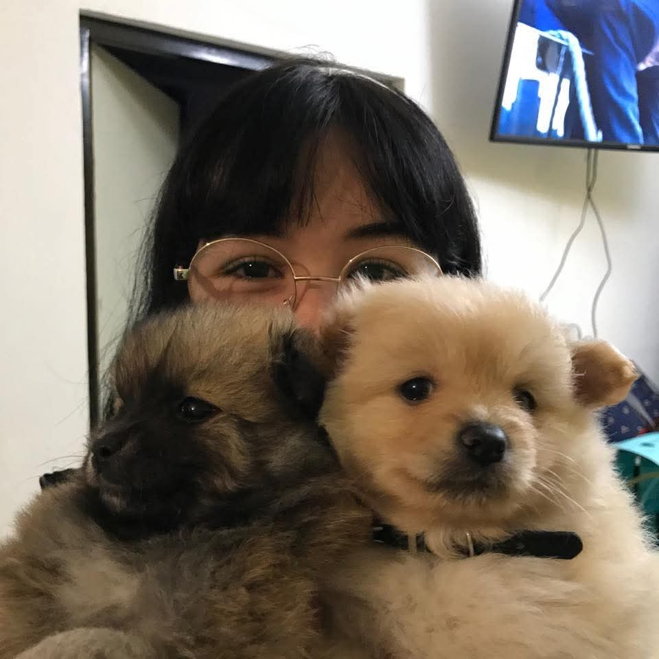
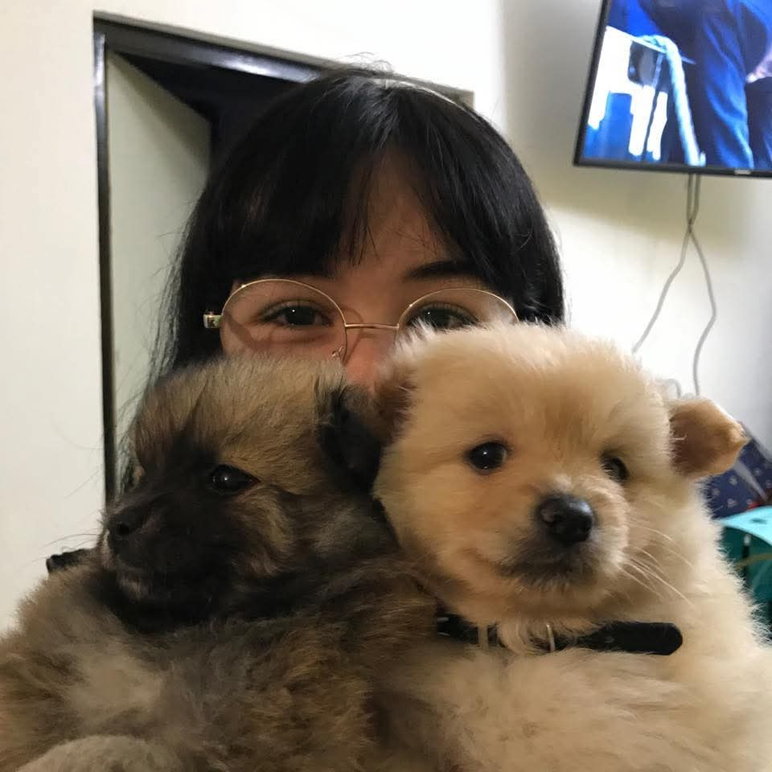
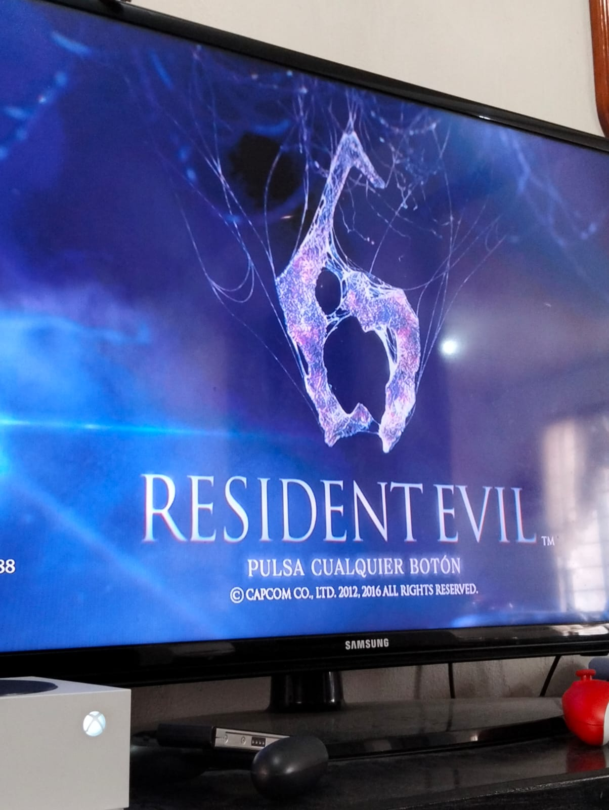
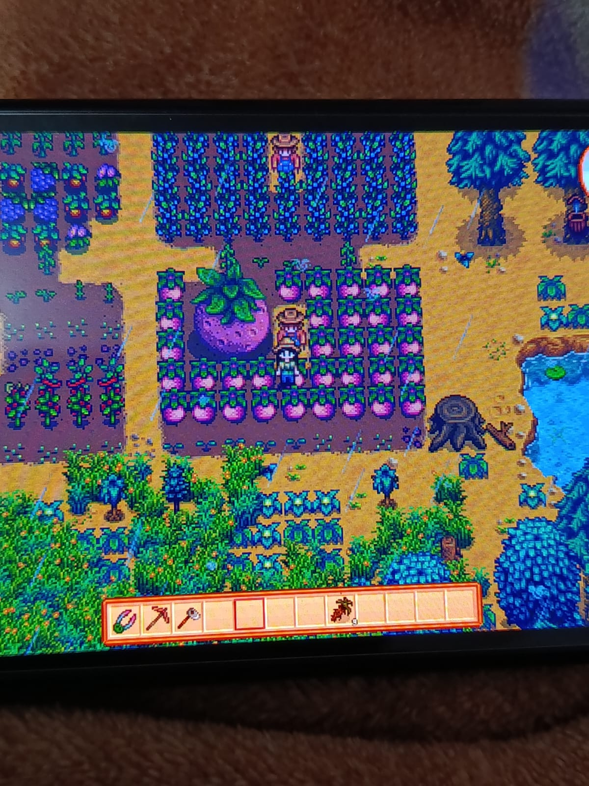
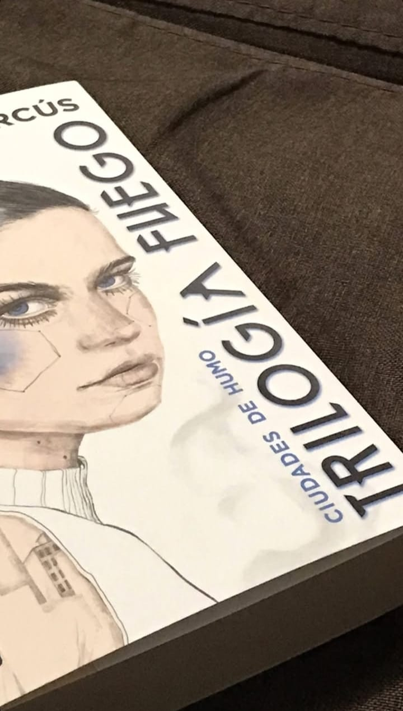
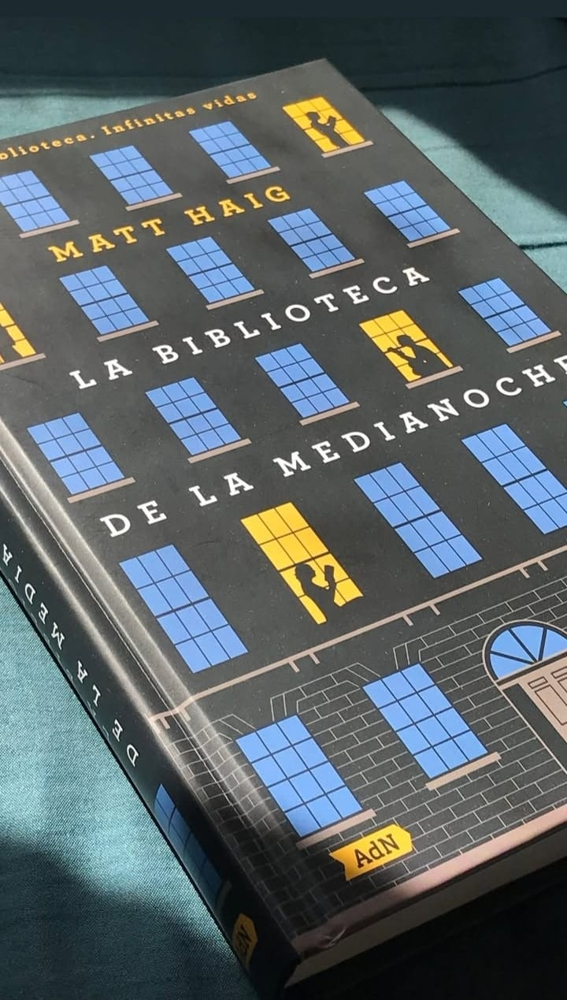
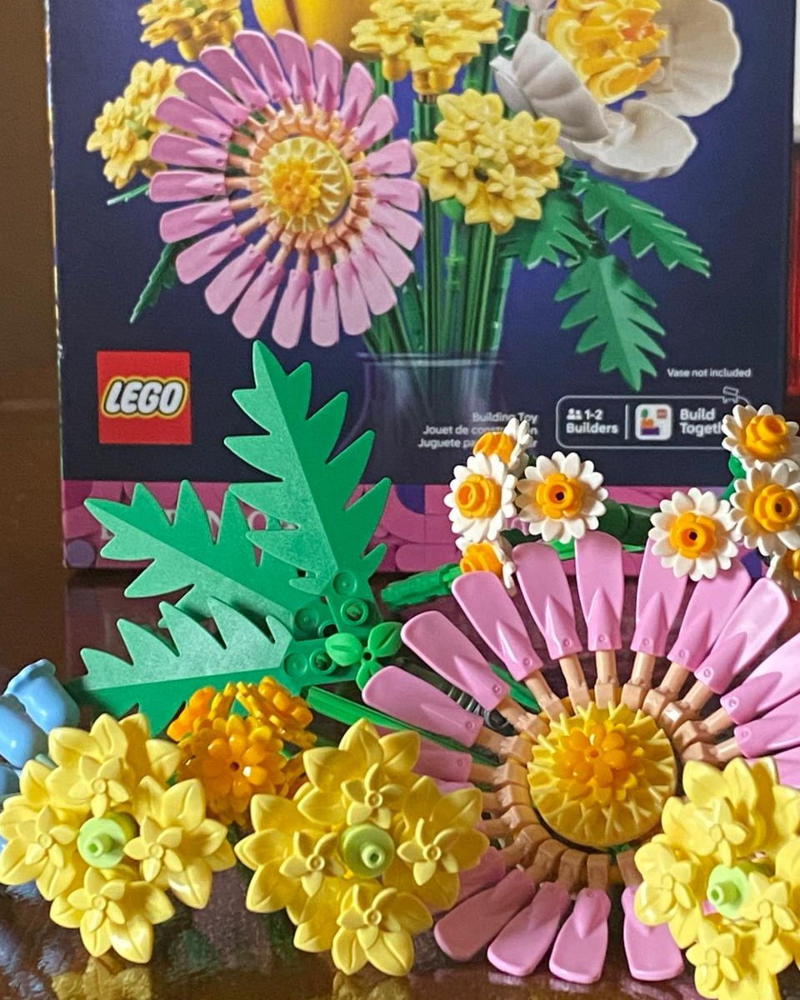
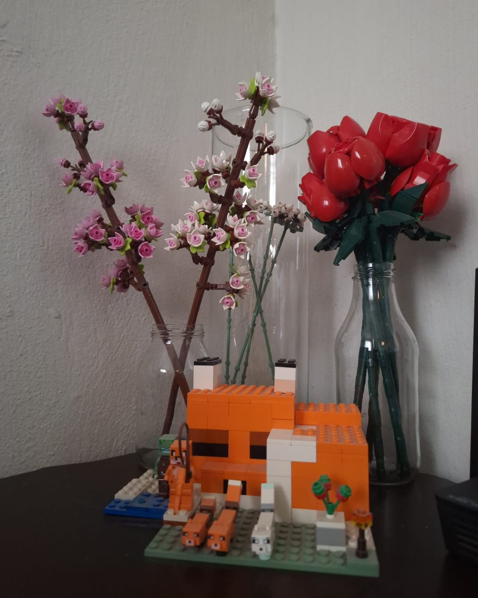

1.- Pasar tiempo con mis mascotas
 

Me gusta cuidar a mi conejo y jugar con mis perritos
2.- Jugar videojuegos
 Mi pasatiempo favorito es jugar videojuegos
3.- Salir a comer


Me gusta salir y probar comidas nuevas
4.- Leer
 Antes leía mucho, pero últimamente ya no lo hago tanto
5.- Armar legos
 Me gusta mucho armar legos